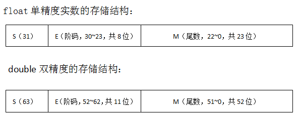

计算机中的数分为整数与实数。对于实数，绝大多数现代的计算机系统采纳了所谓的浮点数表达方式。 这种表达方式利用科学计数法来表达实数，即用一个尾数（Mantissa ）， 一个基数（Base），一个指数(也叫阶码)（Exponent）以及一个表示正负的符号(Sign)来表达实数。 比如 123.45 用十进制科学计数法可以表达为 1.2345 × 10^2 ，其中 1.2345 为尾数，10 为基数，2 为指数。 浮点数利用指数达到了浮动小数点的效果，从而可以灵活地表达更大范围的实数。 又对于一个二进制的数比如1011.01，用科学计数法也可以表示为：1.01101*2^3，其中 1.1101为尾数，2为基数，3为指数。
计算机中是用有限的连续字节保存浮点数的。 保存这些浮点数当然必须有特定的格式， C/C++中的浮点数类型 float 和 double 采纳了 IEEE 754 标准中所定义的单精度 32 位浮点数和双精度 64 位浮点数的格式。 在 IEEE 标准中，浮点数是将特定长度的连续字节的所有二进制位分割为特定宽度的符号域，指数域和尾数域三个域， 其中保存的值分别用于表示给定二进制浮点数中的符号，指数和尾数。 这样，通过尾数和可以调节的指数（所以称为"浮点"）就可以表达给定的数值了。
根据国际标准IEEE 754，任意一个二进制浮点数V可以表示成下面的形式：
V = (-1)^s×M×2^E
（1）(-1)^s表示符号位，当s=0，V为正数；当s=1，V为负数。
（2）M表示有效数字，大于等于1，小于2，但整数部分的1可以省略。
（3）2^E表示指数位。
比如：
对于十进制的5.25对应的二进制为：101.01，相当于：1.0101*2^2。所以，S为0，M为1.0101，E为2。
而-5.25=-101.01=-1.0101*2^2.。所以S为1，M为1.0101，E为2。
对于32位的单精度数来说，从低位到高位，尾数M用23位来表示，阶码E用8位来表示，而符号位用最高位1位来表示，0表示正，1表示负。对于64位的双精度数来说，从低位到高位，尾数M用52位来表示，阶码用11位来表示，而符号位用最高位1位来表示，0表示正，1表示负。
IEEE 754对有效数字M和指数E，还有一些特别规定。 前面说过，M可以写成1.xxxxxx的形式，其中xxxxxx表示小数部分。IEEE 754规定，在计算机内部保存M时，默认这个数的第一位总是1，因此可以被舍去，只保存后面的xxxxxx部分。比如保存1.0101的时候，只保存0101，等到读取的时候，再把第一位的1加上去。这样做的目的，是节省1位有效数字。以32位浮点数为例，留给M只有23位，将第一位的1舍去以后，等于可以保存24位有效数字。
对于E， 首先，E为一个无符号整数（unsigned int）。这意味着，如果E为8位，它的取值范围为0~255；如果E为11位，它的取值范围为0~2047。然而科学计数法中的E是可以出现负数的，所以IEEE 754规定，E的真实值必须再减去一个中间数，对于8位的E，这个中间数是127；对于11位的E，这个中间数是1023。 比如，2^2的E是2，所以保存成float 32位浮点数时，必须保存成2+127=129，即10000001。
此外，E还需要考虑下面3种情况：
（1）E不全为0或不全为1。这时，浮点数就采用上面的规则表示，即指数E的计算值减去127（或1023），得到真实值，再将有效数字M前加上第一位的1。
（2）E全为0。这时，浮点数的指数E等于1-127（或者1-1023），有效数字M不再加上第一位的1，而是还原为0.xxxxxx的小数。这样做是为了表示±0，以及接近于0的很小的数字。
（3）E全为1。这时，如果有效数字M全为0，表示±无穷大（正负取决于符号位s）；如果有效数字M不全为0，表示这个数不是一个数（NaN）。
浮点数的转换方法可以分为如下2种情况：
1.给出一个浮点数，计算对应的二进制
比如给定一个浮点数，7.25，如何计算它对应的单精度和双精度的二进制呢？
首先，十进制浮点数7.25对应的二进制(二进制，十进制和十六进制转化方法：点击这里)为：111.01。用二进制的科学计数法为：1.1101*2^2。所以，按照上面浮点数的存储结构，得出
符号位为：0，表示正数；
阶码（指数）E单精度为2+127=129，双精度为2+1023=1025；
小数部分M为：1101。
所以，
单精度的二进制位：0 10000001 1101 0000000000000000000;
双精度的二进制位：0 10000000001 1101 000000000000000000000000000000000000000000000000
2.给出一个浮点数的二进制，计算对应的十进制值
而如果而如果给出了一个浮点数的二进制，如何计算它对应的十进制，其实就是1中的逆运算。分别求出对应的符号位，阶码指数E和小数M部分，就可以了。比如，给定一个单精度浮点数的二进制存储为：
0 10000001 1101 0000000000000000000;
那么对应的符号为：0，表示正数；阶码E为：129-127=2；尾数为1.1101。所以对应的二进制科学计数法为：1.1101*2^2，也就是111.01即：7.25。
此外，如何将一个字符串转化为实数呢？比如："3.1415926"-->3.1415926。下面给出方法：
double atof(char *s)
{
double val, power;
int i, sign;
assert(s!=NULL);
for (i = 0; isspace(s[i]); i++)
;
sign = (s[i] == '-') ?-1:1;
if (s[i] == '+' || s[i] == '-')
i++;
//处理实数中整数部分
for (val = 0.0; isdigit(s[i]); i++)
val = 10.0 * val + (s[i] - '0');
if (s[i] == '.')
i++;
//处理实数小数部分
for (power = 1.0; isdigit(s[i]); i++)
{
val = 10.0 * val + (s[i] - '0');
power *= 10;
}
return sign * val / power;
}
思考题1（阿里巴巴2015实习生笔试）：
小数值1.5625的二进制表示是？
A.101.1001
B.0.001
C.101.111
D.1.1001
思考题2：
试分析下列程序为什么输出为0？
int main(void)
{
int i = 15;
float m = (float)i;
printf(“%d\n”, m);
return 0;
}
提示：实数的存储，调用约定栈中的对齐方式等。 (
本页共80段，3490个字符，6825 Byte(字节)